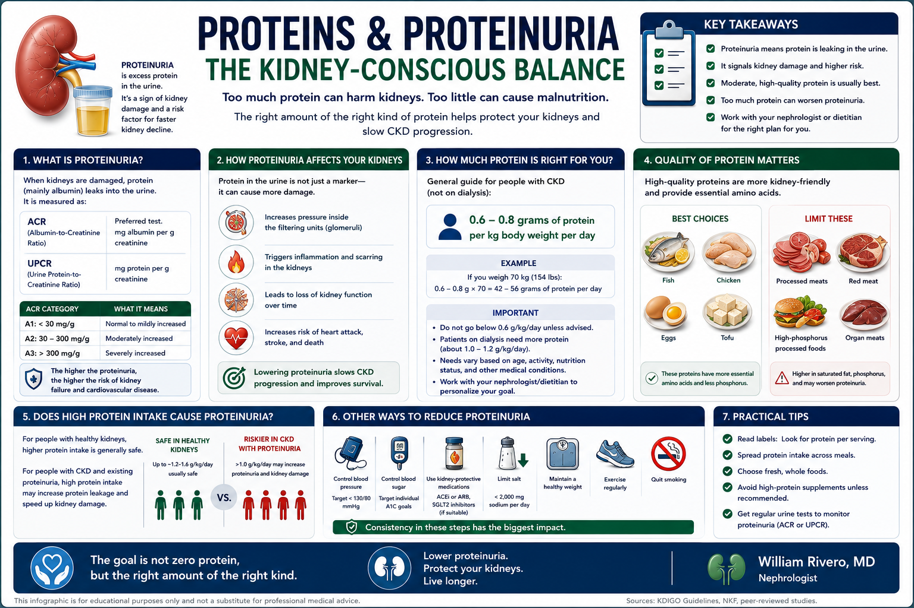
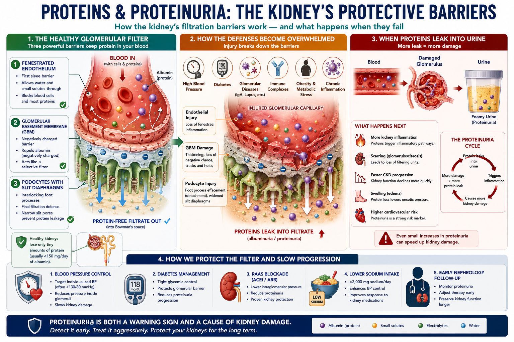
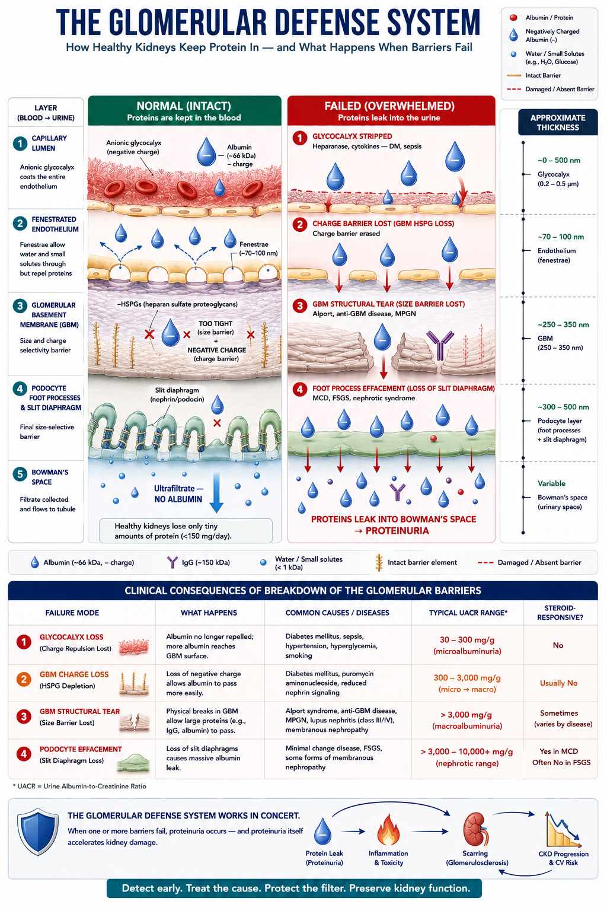

What is Proteinuria?Ano ang Proteinuria?Unsa ang Proteinuria? Ano ing Proteinuria?

Proteinuria means protein leaking into the urine. Normally, the kidney's filtration membrane is impermeable to large molecules like albumin — the main blood protein. When this membrane is damaged or overwhelmed, albumin escapes into the urine. Proteinuria is both a sign of kidney damage and an active driver of further damage — a vicious cycle that must be interrupted.Ang proteinuria ay nangangahulugang nagtatakad ang protina sa ihi. Sa karaniwang kalagayan, ang filtration membrane ng bato ay hindi tinatawid ng malalaking molekula tulad ng albumin — ang pangunahing protina sa dugo. Kapag nasira o nalabasan ang membranang ito, tumatagos ang albumin sa ihi. Ang proteinuria ay parehong tanda ng pinsala sa bato at aktibong nagpapalala ng karagdagang pinsala — isang mapanganib na ikot na dapat putulin.Ang proteinuria nagpasabot nga nagtakas ang protina ngadto sa ihi. Sa normal nga kahimtang, ang filtration membrane sa kidney dili mapasagdan sa dagkong molekula sama sa albumin — ang panguna nga protina sa dugo. Kung kining membrane madaot o mabawasan ang kusog, ang albumin molusot ngadto sa ihi. Ang proteinuria pareho nga timailhan sa kadaot sa kidney ug aktibong nagpalala sa dugang pang kadaot — usa ka delikadong sirkulo nga kinahanglan putulon. Ing proteinuria ya nangangahulugang nagtatakad ing protina king ihi. King karaniwang kalagayan, ing filtration membrane ning batu ya ali tinatawid ning malalaking molekula tulad ning albumin — ing pangunahing protina king daya. Nung nasira o nalabasan ing membranang ini, tumatagos ing albumin king ihi. Ing proteinuria ya parehong tanda ning pinsala king batu at aktibong nagpapalala ning karagdagang pinsala — metung a mapanganib a ikot a dapat putulin.
Is foamy urine always proteinuria?Ang bulang ihi ba ay laging proteinuria?Ang bulobong ihi ba kanunay proteinuria? Ing bulang ihi ba ya pirming proteinuria?
Persistent foam in the toilet after urination is a classic sign of heavy proteinuria — protein causes surface tension that creates stable bubbles. However, rapid urination, a cold toilet bowl, or dehydration can also cause temporary foam. Only a urine test confirms proteinuria.Ang patuloy na bula sa inidoro pagkatapos umihi ay klasikong tanda ng matinding proteinuria — ang protina ay nagdudulot ng surface tension na lumilikha ng matatag na bula. Gayunpaman, ang mabilis na pag-ihi, malamig na inidoro, o dehydration ay maaari ring maging sanhi ng pansamantalang bula. Tanging ang pagsusuri ng ihi ang nagpapatunay ng proteinuria.Ang padayon nga bula sa kasilyas human manihi klasikong timailhan sa grabe nga proteinuria — ang protina nagmugna og surface tension nga naghatag og lig-on nga mga bula. Apan, ang paspas nga pag-ihi, bugnaw nga kasilyas, o dehydration mahimo usab nga hinungdan sa temporaryong bula. Ang pagsusi sa ihi lamang ang nagpamatuod sa proteinuria. Ing patuloy a bula king inidoro kapabanuan umihi ya klasikong tanda ning matinding proteinuria — ing protina ya nagdudulot ning surface tension a lumilikha ning matatag a bula. Gayunpaman, ing mabilis a pag-ihi, malamig a inidoro, o dehydration ya maaari ring maging sanhi ning pansamantalang bula. Tanging ing pagsusuri ning ihi ing nagpapatunay ning proteinuria.
Transient vs persistentPansamantala vs tuluy-tuloyTemporaryo vs padayon Pansamantala vs tuluy-tuloy
Proteinuria after intense exercise, fever, or prolonged standing (orthostatic proteinuria) is benign and transient. Persistent proteinuria detected on two separate tests weeks apart is the clinically significant finding requiring investigation and treatment.Ang proteinuria pagkatapos ng matinding ehersisyo, lagnat, o matagal na pagtayo (orthostatic proteinuria) ay benign at pansamantala. Ang tuluy-tuloy na proteinuria na nakita sa dalawang magkahiwalay na pagsusuri na ilang linggo ang pagitan ang klinikalmenteng makabuluhang natuklasan na nangangailangan ng pagsisiyasat at paggamot.Ang proteinuria human sa grabe nga ehersisyo, hilanat, o matagal nga pagtindog (orthostatic proteinuria) benign ug temporaryo. Ang padayon nga proteinuria nga nakit-an sa duha ka magkahimulag nga pagsusi nga pipila ka semana ang pagbugto mao ang klinikanhon nga mahinungdanon nga natuklasan nga nanginahanglan og imbestigasyon ug pagtambal. Ing proteinuria kapabanuan ning matinding ehersisyo, lagnat, o matagal a pagtayo (orthostatic proteinuria) ya benign at pansamantala. Ing tuluy-tuloy a proteinuria a nakita king dalawang magkahiwalay a pagsusuri a ilang lutu ing pagitan ing klinikalmenteng makabuluhang natuklasan a nangangailangan ning pagsisiyasat at paggamut.
The Glomerular Filtration BarrierAng Glomerular Filtration BarrierAng Glomerular Filtration Barrier Ing Glomerular Filtration Barrier

In a healthy kidney, the filtration membrane prevents albumin (large negative charge) from crossing into the filtrate. Damage from diabetes, hypertension, or glomerulonephritis creates physical gaps and loss of charge selectivity — allowing protein to leak through.Sa malusog na bato, pinipigilan ng filtration membrane ang albumin (malaking negatibong karga) na makapasok sa filtrate. Ang pinsala mula sa diabetes, hypertension, o glomerulonephritis ay lumilikha ng pisikal na mga butas at pagkawala ng charge selectivity — na nagpapahintulot sa protina na tumagas.Sa maayo nga kidney, ang filtration membrane nagpugong sa albumin (dagkong negatibong karga) nga makasulod sa filtrate. Ang kadaot gikan sa diabetes, hypertension, o glomerulonephritis nagmugna og pisikal nga mga buho ug pagkawala sa charge selectivity — nga nagtugot sa protina nga molusot. King malusog a batu, pinipigilan ning filtration membrane ing albumin (malaking negatibong karga) a makapasok king filtrate. Ing pinsala mula king diabetes, hypertension, o glomerulonephritis ya lumilikha ning pisikal a deng butas at pagkaala ning charge selectivity — a nagpapahintulot king protina a tumagas.
The Three Lines of Defense — How the Barrier Actually WorksAng Tatlong Linya ng Depensa — Kung Paano Talagang Gumagana ang BarrierAng Tulo ka Linya sa Depensa — Kung Giunsa Tinuod nga Nagtrabaho ang Barrier Ing Tatlong Linya ning Depensa — Nung Paano Talagang Gumagana ing Barrier
The glomerular filtration barrier is not a single wall but a three-tier security system, each layer contributing independent size- and charge-selective properties. Albumin (MW ~69 kDa, hydrodynamic radius ~3.6 nm, net charge −17 at physiological pH) must defeat all three to reach the urine. Normally, it fails at every checkpoint.Ang glomerular filtration barrier ay hindi isang solong pader kundi isang tatlong antas na sistema ng seguridad, kung saan ang bawat layer ay nagbibigay ng independyenteng size- at charge-selective na katangian. Ang albumin (MW ~69 kDa, hydrodynamic radius ~3.6 nm, net charge −17 sa physiological pH) ay kailangang mapagtagumpayan ang lahat ng tatlo upang makarating sa ihi. Sa karaniwang kalagayan, nabibigo ito sa bawat checkpoint.Ang glomerular filtration barrier dili usa ka solong pader kondili usa ka tulo ka antas nga sistema sa seguridad, diin ang matag layer naghatag og independyenteng size- ug charge-selective nga katangian. Ang albumin (MW ~69 kDa, hydrodynamic radius ~3.6 nm, net charge −17 sa physiological pH) kinahanglan mapildi ang tanan nga tulo aron makaabot sa ihi. Sa normal nga kahimtang, mapalpak kini sa matag checkpoint. Ing glomerular filtration barrier ya ali metung a solong pader kundi metung a tatlong antas a sistema ning seguridad, nung saan ing bawat layer ya nagbibigay ning independyenteng size- at charge-selective a katangian. Ing albumin (MW ~69 kDa, hydrodynamic radius ~3.6 nm, net charge −17 king physiological pH) ya kailangang mapagtagumpayan ing amin ning tatlo upang makarating king ihi. King karaniwang kalagayan, nabibigo ini king bawat checkpoint.
Layer 1 — Fenestrated Endothelium & Glycocalyx (Size + Charge)Layer 1 — Fenestrated Endothelium at Glycocalyx (Sukat + Karga)Layer 1 — Fenestrated Endothelium ug Glycocalyx (Gidak-on + Karga) Layer 1 — Fenestrated Endothelium at Glycocalyx (Sukat + Karga)
The glomerular capillary endothelium is perforated by fenestrae 70–100 nm wide — large enough to pass water, ions, glucose, and small peptides freely. But the entire luminal surface is coated in a glycocalyx: a dense, negatively charged mesh of heparan sulfate proteoglycans, sialoproteins, and glycolipids.Ang glomerular capillary endothelium ay may mga butas na tinatawag na fenestrae na 70–100 nm ang lapad — sapat ang laki para payagan ang tubig, ions, glucose, at maliliit na peptides na dumaan nang malaya. Ngunit ang buong luminal surface ay nababalutan ng glycocalyx: isang siksik, negatibong kinakargahang mesh ng heparan sulfate proteoglycans, sialoproteins, at glycolipids.Ang glomerular capillary endothelium adunay mga buho nga gitawag og fenestrae nga 70–100 nm ang gilapdon — igo ang kadako aron pasagdan ang tubig, ions, glucose, ug gagmay nga peptides nga moagi nga gawasnon. Apan ang tibuok luminal surface gitabonan og glycocalyx: usa ka siksik, negatibong kinargahang mesh sa heparan sulfate proteoglycans, sialoproteins, ug glycolipids. Ing glomerular capillary endothelium ya atin deng butas a tinatawag a fenestrae a 70–100 nm ing lapad — sapat ing laki para payagan ing danum, ions, glucose, at maliliit a peptides a dumaan nang malaya. Ngarud ing buong luminal surface ya nababalutan ning glycocalyx: metung a siksik, negatibong kinakargahang mesh ning heparan sulfate proteoglycans, sialoproteins, at glycolipids.
- Charge barrier:Charge barrier:Charge barrier: Charge barrier: Albumin (net negative) is electrostatically repelled by the anionic glycocalyx before it even reaches the fenestrae — like trying to push two south-pole magnets together.Ang albumin (net negatibo) ay elektrostatikong tinatanggi ng anionic glycocalyx bago pa man makarating sa fenestrae — tulad ng pagsubok na itulak ang dalawang south-pole magnets.Ang albumin (net negatibo) electrostatic nga gisalikway sa anionic glycocalyx bago pa makaabot sa fenestrae — sama sa pagsulay nga iduso ang duha ka south-pole magnets. Ing albumin (net negatibo) ya elektrostatikong tinatanggi ning anionic glycocalyx bago pa man makarating king fenestrae — tulad ning pagsubok a itulak ing dalawang south-pole magnets.
- Size contribution:Kontribusyon sa sukat:Kontribusyon sa gidak-on: Kontribusyon king sukat: Fenestrae freely admit molecules up to ~8 nm radius; albumin's 3.6 nm radius technically fits, but the glycocalyx dramatically reduces the effective pore size available to it.Ang fenestrae ay malaya na nagpapasok ng mga molekula hanggang ~8 nm radius; ang 3.6 nm radius ng albumin ay teknikal na akma, ngunit ang glycocalyx ay malubhang nagpapababa ng epektibong sukat ng pore na available dito.Ang fenestrae gawasnon nga nagdawat sa mga molekula hangtod ~8 nm radius; ang 3.6 nm radius sa albumin teknikal nga akma, apan ang glycocalyx dramatikong nagpakunhod sa epektibong gidak-on sa pore nga magamit niini. Ing fenestrae ya malaya a nagpapasok ning deng molekula anggang ~8 nm radius; ing 3.6 nm radius ning albumin ya teknikal a akma, ngarud ing glycocalyx ya malubhang nagpapababa ning epektibong sukat ning pore a available dini.
- Clinical relevance:Klinikalmenteng kaugnayan:Klinikanhon nga relevance: Klinikalmenteng kaugnayan: Inflammatory states (sepsis, cytokine storm, diabetic nephropathy) degrade the glycocalyx via heparanase activity — the first breach. This is why proteinuria can appear acutely in systemic illness even before structural GBM damage occurs.Ang mga kondisyong may pamamaga (sepsis, cytokine storm, diabetic nephropathy) ay sinisira ang glycocalyx sa pamamagitan ng heparanase activity — ang unang paglabag. Kaya naman ang proteinuria ay maaaring lumabas nang biglaan sa systemic na sakit kahit bago pa mangyari ang istruktural na pinsala sa GBM.Ang mga kondisyon nga adunay pamamaga (sepsis, cytokine storm, diabetic nephropathy) nagdegrade sa glycocalyx pinaagi sa heparanase activity — ang unang paglabag. Mao kini ang hinungdan nga ang proteinuria mahimong mogawas nga binawal sa systemic nga sakit bisan sa wala pa mahitabo ang istruktural nga kadaot sa GBM. Ing deng kondisyong atin pamamaga (sepsis, cytokine storm, diabetic nephropathy) ya sinisira ing glycocalyx king pamamagitan ning heparanase activity — ing unang paglabag. Kaya naman ing proteinuria ya maaaring lumabas nang biglaan king systemic a sakit kahit bago pa mangyari ing istruktural a pinsala king GBM.
Layer 2 — Glomerular Basement Membrane (Size + Charge)Layer 2 — Glomerular Basement Membrane (Sukat + Karga)Layer 2 — Glomerular Basement Membrane (Gidak-on + Karga) Layer 2 — Glomerular Basement Membrane (Sukat + Karga)
The GBM is a ~300–350 nm thick extracellular matrix sandwiched between the endothelium and podocytes. Its scaffold is type IV collagen (α3α4α5 chains), laminin-521, and nidogen, woven into a mesh with effective pore radii of ~4–5 nm. Embedded throughout are heparan sulfate proteoglycans — primarily agrin and perlecan — that carry the densest anionic charge concentration in the barrier.Ang GBM ay isang ~300–350 nm na makapal na extracellular matrix na nakalagay sa pagitan ng endothelium at podocytes. Ang scaffold nito ay type IV collagen (α3α4α5 chains), laminin-521, at nidogen, na hinabi sa isang mesh na may epektibong pore radii na ~4–5 nm. Nakatanim sa buong bahagi ang heparan sulfate proteoglycans — pangunahin ang agrin at perlecan — na nagdadala ng pinakamataas na konsentrasyon ng anionic charge sa barrier.Ang GBM usa ka ~300–350 nm ka nipis nga extracellular matrix nga gibutang sa taliwala sa endothelium ug podocytes. Ang scaffold niini mao ang type IV collagen (α3α4α5 chains), laminin-521, ug nidogen, gilubid sa usa ka mesh nga adunay epektibong pore radii nga ~4–5 nm. Gitanom sa tibuok bahin ang heparan sulfate proteoglycans — panguna ang agrin ug perlecan — nga nagdala sa pinakasiksik nga konsentrasyon sa anionic charge sa barrier. Ing GBM ya metung a ~300–350 nm a makapal a extracellular matrix a nakalagay king pagitan ning endothelium at podocytes. Ing scaffold nini ya type IV collagen (α3α4α5 chains), laminin-521, at nidogen, a hinabi king metung a mesh a atin epektibong pore radii a ~4–5 nm. Nakatanim king buong bahagi ing heparan sulfate proteoglycans — pangunahin ing agrin at perlecan — a nagdadala ning pinakamatas a konsentrasyon ning anionic charge king barrier.
- Size selectivity:Pagpili ayon sa sukat:Pagpili ayon sa gidak-on: Pagpili ayon king sukat: The collagen weave physically sieves molecules; neutral dextrans >4 nm are increasingly restricted; albumin at 3.6 nm radius is close to the size cut-off and depends on charge to compensate.Ang collagen weave ay pisikal na nagsasala ng mga molekula; ang neutral dextrans >4 nm ay lalong pinipigilan; ang albumin sa 3.6 nm radius ay malapit sa size cut-off at umaasa sa karga para makapagbayad-puri.Ang collagen weave pisikal nga nagsasala sa mga molekula; ang neutral dextrans >4 nm labi ka gipugngan; ang albumin sa 3.6 nm radius duol sa size cut-off ug nag-asa sa karga aron makabayad. Ing collagen weave ya pisikal a nagsasala ning deng molekula; ing neutral dextrans >4 nm ya lalong pinipigilan; ing albumin king 3.6 nm radius ya malapit king size cut-off at umaasa king karga para makapagbayad-puri.
- Charge selectivity:Pagpili ayon sa karga:Pagpili ayon sa karga: Pagpili ayon king karga: Heparan sulfate side chains create a Donnan-type electrochemical exclusion zone for anionic proteins. Removal of heparan sulfate experimentally (heparitinase treatment) doubles albumin filtration even without structural disruption.Ang heparan sulfate side chains ay lumilikha ng Donnan-type na electrochemical exclusion zone para sa anionic proteins. Ang pag-alis ng heparan sulfate sa eksperimento (heparitinase treatment) ay nagdoble ng albumin filtration kahit wala pang istruktural na pagkasira.Ang heparan sulfate side chains nagmugna og Donnan-type nga electrochemical exclusion zone alang sa anionic proteins. Ang pagtangtang sa heparan sulfate sa eksperimento (heparitinase treatment) nagdoble sa albumin filtration bisan walay istruktural nga pagkaguba. Ing heparan sulfate side chains ya lumilikha ning Donnan-type a electrochemical exclusion zone para king anionic proteins. Ing pag-alis ning heparan sulfate king eksperimento (heparitinase treatment) ya nagdoble ning albumin filtration kahit ala pang istruktural a pagkasira.
- Genetic failures:Mga genetic na pagkabigo:Mga genetic nga kapalong: Deng genetic a pagkabigo: Mutations in COL4A3/A4/A5 (Alport syndrome) disrupt the type IV collagen network — structural size-barrier failure leading to hematuria and progressive proteinuria. Mutations in LAMB2 (Pierson syndrome) destroy the laminin scaffold with similar consequences.Ang mga mutasyon sa COL4A3/A4/A5 (Alport syndrome) ay nagsisira ng type IV collagen network — pagkabigo ng istruktural na size-barrier na nagdudulot ng hematuria at progresibong proteinuria. Ang mga mutasyon sa LAMB2 (Pierson syndrome) ay sumisira ng laminin scaffold na may katulad na mga kahihinatnan.Ang mga mutasyon sa COL4A3/A4/A5 (Alport syndrome) nagguba sa type IV collagen network — istruktural nga size-barrier nga kapalong nga nagdala og hematuria ug progresibong proteinuria. Ang mga mutasyon sa LAMB2 (Pierson syndrome) naglaglag sa laminin scaffold nga adunay susama nga mga resulta. Ing deng mutasyon king COL4A3/A4/A5 (Alport syndrome) ya nagsisira ning type IV collagen network — pagkabigo ning istruktural a size-barrier a nagdudulot ning hematuria at progresibong proteinuria. Ing deng mutasyon king LAMB2 (Pierson syndrome) ya sumisira ning laminin scaffold a atin katulad a deng kahihinatnan.
- Acquired damage:Nakuhang pinsala:Nakuha nga kadaot: Nakuhang pinsala: In diabetic nephropathy, GBM thickening paradoxically impairs charge selectivity (HSPG content falls proportionally despite increased total GBM thickness), explaining why DM proteinuria begins with albuminuria before nephrotic-range losses.Sa diabetic nephropathy, ang pagkakapal ng GBM ay paradoxically nagpapahina ng charge selectivity (ang HSPG content ay proportionally bumababa kahit tumaas ang kabuuang kapal ng GBM), na nagpapaliwanag kung bakit ang DM proteinuria ay nagsisimula sa albuminuria bago mag-nephrotic-range ang mga pagkawala.Sa diabetic nephropathy, ang pagkakapal sa GBM paradoxically nagpahuyang sa charge selectivity (ang HSPG content proportional nga nahulog bisan tumaas ang kinatibuk-ang kapal sa GBM), nga nagpasabot ngano ang DM proteinuria nagsugod sa albuminuria sa dili pa moabot og nephrotic-range nga pagkawala. King diabetic nephropathy, ing pagkakapal ning GBM ya paradoxically nagpapahina ning charge selectivity (ing HSPG content ya proportionally bumababa kahit tumaas ing kabuuang kapal ning GBM), a nagpapaliwanag nung bakit ing DM proteinuria ya nagsisimula king albuminuria bago mag-nephrotic-range ing deng pagkaala.
Layer 3 — Podocyte Foot Processes & Slit Diaphragm (Size + Final Gate)Layer 3 — Podocyte Foot Processes at Slit Diaphragm (Sukat + Huling Pintuan)Layer 3 — Podocyte Foot Processes ug Slit Diaphragm (Gidak-on + Katapusang Pinto) Layer 3 — Podocyte Foot Processes at Slit Diaphragm (Sukat + Huling Pintuan)
Podocytes are highly specialized epithelial cells that wrap interdigitating foot processes around the capillary. The gaps between adjacent foot processes — the filtration slits (~40 nm wide) — are bridged by the slit diaphragm, a zipper-like molecular assembly that is the final gatekeeper to the urinary space.Ang podocytes ay lubos na espesyalisadong epithelial cells na nagbabalot ng magkakaugnay na foot processes sa paligid ng capillary. Ang mga puwang sa pagitan ng magkaratig na foot processes — ang filtration slits (~40 nm ang lapad) — ay natatakpan ng slit diaphragm, isang zipper-like molecular assembly na siyang huling bantay sa urinary space.Ang podocytes labi ka espesyalisadong epithelial cells nga nagbalikid sa magkaugnay nga foot processes sa palibot sa capillary. Ang mga guwang taliwala sa magkasipad nga foot processes — ang filtration slits (~40 nm ang gilapdon) — gitabok sa slit diaphragm, usa ka zipper-like molecular assembly nga mao ang katapusang bantay sa urinary space. Ing podocytes ya lubos a espesyalisadong epithelial cells a nagbabalot ning magkakaugnay a foot processes king paligid ning capillary. Ing deng puwang king pagitan ning magkaratig a foot processes — ing filtration slits (~40 nm ing lapad) — ya natatakpan ning slit diaphragm, metung a zipper-like molecular assembly a siyang huling bantay king urinary space.
- Key molecules:Mga pangunahing molekula:Mga yawe nga molekula: Deng pangunahing molekula: Nephrin (NPHS1) and Neph1 form the structural zipper; podocin (NPHS2) anchors nephrin to lipid rafts; CD2AP and ZO-1 link the complex to the actin cytoskeleton. FAT1/FAT2 cadherins and P-cadherin provide additional adhesion.Ang Nephrin (NPHS1) at Neph1 ang bumubuo ng istruktural na zipper; ang podocin (NPHS2) nag-aangkla ng nephrin sa lipid rafts; ang CD2AP at ZO-1 nag-uugnay ng complex sa actin cytoskeleton. Ang FAT1/FAT2 cadherins at P-cadherin ay nagbibigay ng karagdagang adhesion.Ang Nephrin (NPHS1) ug Neph1 naghimo sa istruktural nga zipper; ang podocin (NPHS2) nag-angkla sa nephrin ngadto sa lipid rafts; ang CD2AP ug ZO-1 nag-ugnay sa complex ngadto sa actin cytoskeleton. Ang FAT1/FAT2 cadherins ug P-cadherin naghatag og dugang nga adhesion. Ing Nephrin (NPHS1) at Neph1 ing bumubuo ning istruktural a zipper; ing podocin (NPHS2) nag-aangkla ning nephrin king lipid rafts; ing CD2AP at ZO-1 nag-uugnay ning complex king actin cytoskeleton. Ing FAT1/FAT2 cadherins at P-cadherin ya nagbibigay ning karagdagang adhesion.
- Dual barrier function:Dual na tungkulin ng barrier:Dual nga katungdanan sa barrier: Dual a tungkulin ning barrier: The slit diaphragm acts as both a size-selective sieve (proteins >~8 nm radius are excluded) and — because foot process surfaces are coated with podocalyxin (sialylated, highly anionic) — a charge barrier on the urinary side.Ang slit diaphragm ay gumaganap bilang size-selective na salaan (ang mga protina >~8 nm radius ay hindi tinatanggap) at — dahil ang mga ibabaw ng foot process ay nababalutan ng podocalyxin (sialylated, lubos na anionic) — isang charge barrier sa panig ng ihi.Ang slit diaphragm nagtrabaho ingon usa ka size-selective nga salaan (ang mga protina >~8 nm radius gidili) ug — tungod kay ang mga ibabaw sa foot process gitabonan og podocalyxin (sialylated, labi ka anionic) — usa ka charge barrier sa bahin sa ihi. Ing slit diaphragm ya gumaganap bilang size-selective a salaan (ing deng protina >~8 nm radius ya ali tinatanggap) at — dahil ing deng ibabaw ning foot process ya nababalutan ning podocalyxin (sialylated, lubos a anionic) — metung a charge barrier king panig ning ihi.
- Foot process effacement:Effacement ng foot process:Effacement sa foot process: Effacement ning foot process: When podocytes are injured (immune, metabolic, haemodynamic stress), foot processes retract and fuse into a sheet — eliminating the slit structure. This is the hallmark of nephrotic syndrome and is reversible in minimal change disease but irreversible in advanced FSGS and diabetic nephropathy.Kapag nasugatan ang podocytes (immune, metabolic, haemodynamic stress), ang foot processes ay umuurong at nagtatagpo sa isang sheet — inaaalis ang slit structure. Ito ang hallmark ng nephrotic syndrome at nababalik sa minimal change disease ngunit hindi na nababalik sa advanced FSGS at diabetic nephropathy.Kung ang podocytes madaot (immune, metabolic, haemodynamic stress), ang foot processes moatras ug motopon sa usa ka sheet — ginalisan ang slit structure. Kini ang hallmark sa nephrotic syndrome ug mabalihon sa minimal change disease apan dili na mabalihon sa advanced FSGS ug diabetic nephropathy. Nung nasugatan ing podocytes (immune, metabolic, haemodynamic stress), ing foot processes ya umuurong at nagtatagpo king metung a sheet — inaaalis ing slit structure. Ini ing hallmark ning nephrotic syndrome at nababalik king minimal change disease ngarud ali a nababalik king advanced FSGS at diabetic nephropathy.
- Genetic NS:Genetic na NS:Genetic nga NS: Genetic a NS: Mutations in NPHS1 (nephrin — Finnish congenital NS) or NPHS2 (podocin) cause severe proteinuria from birth by eliminating slit diaphragm assembly entirely. These are steroid-resistant because the structural scaffold for the barrier simply does not exist.Ang mga mutasyon sa NPHS1 (nephrin — Finnish congenital NS) o NPHS2 (podocin) ay nagdudulot ng matinding proteinuria mula pa sa kapanganakan sa pamamagitan ng ganap na pag-aalis ng slit diaphragm assembly. Ang mga ito ay steroid-resistant dahil ang istruktural na scaffold ng barrier ay wala talaga.Ang mga mutasyon sa NPHS1 (nephrin — Finnish congenital NS) o NPHS2 (podocin) nagdala og grabe nga proteinuria gikan pa sa pagkatawo pinaagi sa ganap nga pagtangtang sa slit diaphragm assembly. Kini steroid-resistant tungod kay ang istruktural nga scaffold sa barrier wala gayud naglungtad. Ing deng mutasyon king NPHS1 (nephrin — Finnish congenital NS) o NPHS2 (podocin) ya nagdudulot ning matinding proteinuria mula pa king kapanganakan king pamamagitan ning ganap a pag-aalis ning slit diaphragm assembly. Ing deng ini ya steroid-resistant dahil ing istruktural a scaffold ning barrier ya ala talaga.

How These Defenses Are OverwhelmedPaano Nalulupig ang mga Depensang ItoGiunsa Pagdaog Niini nga mga Depensa Paano Nalulupig ing deng Depensang Ini
Barrier failure is not a single event — it is a cascade, and the route of failure predicts the type and severity of proteinuria.Ang pagkabigo ng barrier ay hindi isang solong pangyayari — ito ay isang kasunod-sunod na proseso, at ang landas ng pagkabigo ay nagtataya ng uri at kalubhaan ng proteinuria.Ang kapalong sa barrier dili usa ka solong panghitabo — kini usa ka sunod-sunod nga proseso, ug ang dalan sa kapalong nagtagna sa klase ug kabug-at sa proteinuria. Ing pagkabigo ning barrier ya ali metung a solong pangyayari — ini ya metung a kasunod-sunod a proseso, at ing landas ning pagkabigo ya nagtataya ning uri at kalubhaan ning proteinuria.
| MechanismMekanismoMekanismo Mekanismo | Layer BreachedLayer na NalabagLayer nga Nalapasan Layer a Nalabag | Proteinuria TypeUri ng ProteinuriaKlase sa Proteinuria Uri ning Proteinuria | ExamplesMga HalimbawaMga Pananglitan Deng Halimbawa |
|---|---|---|---|
| Glycocalyx degradationPagkasira ng glycocalyxPagkaguba sa glycocalyx Pagkasira ning glycocalyx — heparanase, inflammatory cytokines strip the endothelial charge cloudang heparanase at inflammatory cytokines ay nagtanggal ng endothelial charge cloudang heparanase ug inflammatory cytokines nagtangtang sa endothelial charge cloud ing heparanase at inflammatory cytokines ya nagtanggal ning endothelial charge cloud | Layer 1Layer 1Layer 1 Layer 1 | Early microalbuminuria; acute-phase proteinuriaMaagang microalbuminuria; acute-phase proteinuriaSayo nga microalbuminuria; acute-phase proteinuria Maagang microalbuminuria; acute-phase proteinuria | Diabetic nephropathy (early), sepsis-associated AKIDiabetic nephropathy (maagang yugto), sepsis-associated AKIDiabetic nephropathy (sayo), sepsis-associated AKI Diabetic nephropathy (maagang yugto), sepsis-associated AKI |
| HSPG loss in GBMPagkawala ng HSPG sa GBMPagkawala sa HSPG sa GBM Pagkaala ning HSPG king GBM — reduced agrin/perlecan expression eliminates anionic charge barrierang nabawasang agrin/perlecan expression ay nag-aalis ng anionic charge barrierang nabawasang agrin/perlecan expression nagtangtang sa anionic charge barrier ing nabawasang agrin/perlecan expression ya nag-aalis ning anionic charge barrier | Layer 2 (charge)Layer 2 (karga)Layer 2 (karga) Layer 2 (karga) | Selective albuminuria (albumin > IgG); subnephrotic rangeSelective albuminuria (albumin > IgG); subnephrotic rangeSelective albuminuria (albumin > IgG); subnephrotic range Selective albuminuria (albumin > IgG); subnephrotic range | Diabetic nephropathy, minimal change disease (circulating permeability factor)Diabetic nephropathy, minimal change disease (circulating permeability factor)Diabetic nephropathy, minimal change disease (circulating permeability factor) Diabetic nephropathy, minimal change disease (circulating permeability factor) |
| GBM structural disruptionIstruktural na pagkasira ng GBMIstruktural nga pagkaguba sa GBM Istruktural a pagkasira ning GBM — collagen/laminin mutation or immune complex deposition destroys weaveang mutasyon ng collagen/laminin o deposisyon ng immune complex ay sumisira ng weaveang mutasyon sa collagen/laminin o deposisyon sa immune complex naglaglag sa weave ing mutasyon ning collagen/laminin o deposisyon ning immune complex ya sumisira ning weave | Layer 2 (size)Layer 2 (sukat)Layer 2 (gidak-on) Layer 2 (sukat) | Hematuria + non-selective proteinuria; IgG lossHematuria + non-selective proteinuria; pagkawala ng IgGHematuria + non-selective proteinuria; pagkawala sa IgG Hematuria + non-selective proteinuria; pagkaala ning IgG | Alport syndrome, MPGN, anti-GBM diseaseAlport syndrome, MPGN, anti-GBM diseaseAlport syndrome, MPGN, anti-GBM disease Alport syndrome, MPGN, anti-GBM disease |
| Podocyte foot process effacementEffacement ng podocyte foot processEffacement sa podocyte foot process Effacement ning podocyte foot process — cytoskeletal rearrangement obliterates filtration slitsang cytoskeletal rearrangement ay nag-aalis ng filtration slitsang cytoskeletal rearrangement nagpapas sa filtration slits ing cytoskeletal rearrangement ya nag-aalis ning filtration slits | Layer 3Layer 3Layer 3 Layer 3 | Massive non-selective proteinuria (nephrotic range ≥3.5 g/day)Malaking non-selective proteinuria (nephrotic range ≥3.5 g/araw)Dakong non-selective proteinuria (nephrotic range ≥3.5 g/adlaw) Malaking non-selective proteinuria (nephrotic range ≥3.5 g/aldo) | Minimal change disease, FSGS, diabetic nephropathy (advanced)Minimal change disease, FSGS, diabetic nephropathy (advanced)Minimal change disease, FSGS, diabetic nephropathy (advanced) Minimal change disease, FSGS, diabetic nephropathy (advanced) |
| Overflow (intact barrier)Overflow (buo pa ang barrier)Overflow (buo pa ang barrier) Overflow (buo pa ing barrier) — plasma protein load exceeds tubular reabsorptive capacity; barrier not damagedang dami ng plasma protein ay lumalagpas sa tubular reabsorptive capacity; hindi nasira ang barrierang gidaghanon sa plasma protein milabaw sa tubular reabsorptive capacity; wala nadaot ang barrier ing dami ning plasma protein ya lumalagpas king tubular reabsorptive capacity; ali nasira ing barrier | None (tubular limit)Wala (tubular limit)Wala (tubular limit) Ala (tubular limit) | Non-albumin proteins (light chains, myoglobin); dipstick-negativeNon-albumin proteins (light chains, myoglobin); negatibo sa dipstickNon-albumin proteins (light chains, myoglobin); negatibo sa dipstick Non-albumin proteins (light chains, myoglobin); negatibo king dipstick | Multiple myeloma (Bence-Jones), rhabdomyolysis, hemolysisMultiple myeloma (Bence-Jones), rhabdomyolysis, hemolysisMultiple myeloma (Bence-Jones), rhabdomyolysis, hemolysis Multiple myeloma (Bence-Jones), rhabdomyolysis, hemolysis |
| Haemodynamic glomerular hypertensionHaemodynamic glomerular hypertensionHaemodynamic glomerular hypertension Haemodynamic glomerular hypertension — elevated intraglomerular pressure forces albumin across a structurally intact but mechanically stressed barrierang mataas na intraglomerular pressure ay pumipilitan ng albumin na tumawid sa istruktural na buo ngunit mechanically stressed na barrierang taas nga intraglomerular pressure nagpugos sa albumin nga motabok sa istruktural nga buo apan mechanically stressed nga barrier ing matas a intraglomerular pressure ya pumipilitan ning albumin a tumawid king istruktural a buo ngarud mechanically stressed a barrier | All layers (mechanical stress)Lahat ng layer (mechanical stress)Tanan nga layer (mechanical stress) Amin ning layer (mechanical stress) | Progressive albuminuria worsening over yearsProgresibong albuminuria na lumalalim sa loob ng mga taonProgresibong albuminuria nga nagpalala sulod sa mga tuig Progresibong albuminuria a lumalalim king loob ning deng banua | Single functioning kidney, remnant nephron hyperfiltration, uncontrolled systemic hypertensionIisang gumaganang bato, remnant nephron hyperfiltration, hindi kontroladong systemic hypertensionUsa ka nagtrabaho nga kidney, remnant nephron hyperfiltration, dili kontrolado nga systemic hypertension Iisang gumaganang batu, remnant nephron hyperfiltration, ali kontroladong systemic hypertension |
The Overflow Problem — When the Barrier Isn't the IssueAng Problema ng Overflow — Kapag Hindi ang Barrier ang SuliraninAng Problema sa Overflow — Kung ang Barrier Dili ang Isyo Ing Problema ning Overflow — Nung Ali ing Barrier ing Suliranin
A clinically important and frequently missed mechanism: when circulating protein concentration rises dramatically — or an abnormal protein floods the bloodstream — a structurally normal glomerular barrier can be overwhelmed by sheer volume. The tubule, which normally reclaims the small fraction of albumin that slips through, has a finite reabsorption capacity (megalin-cubilin transport system). When this is saturated, protein appears in urine.Isang klinikalmenteng mahalagang at madalas na napalampas na mekanismo: kapag ang konsentrasyon ng circulating protein ay dramatikong tumaas — o ang isang abnormal na protina ay bumaha sa daluyan ng dugo — ang istruktural na normal na glomerular barrier ay maaaring malabasan ng dami lamang. Ang tubule, na karaniwang muling kinukuha ang maliit na bahagi ng albumin na tumatagos, ay may limitadong kapasidad sa reabsorption (megalin-cubilin transport system). Kapag nabusog na ito, lumabas ang protina sa ihi.Usa ka klinikanhon nga mahinungdanon ug kanunay nga napasagdan nga mekanismo: kung ang konsentrasyon sa circulating protein dramatikong mitaas — o ang abnormal nga protina mibaha sa dugo — ang istruktural nga normal nga glomerular barrier mahimong malabwan sa dami lamang. Ang tubule, nga normal nga nagkuha pag-usab sa gamay nga bahin sa albumin nga molusot, adunay limitado nga kapasidad sa reabsorption (megalin-cubilin transport system). Kung mabusog na kini, mogawas ang protina sa ihi. Metung a klinikalmenteng mahalagang at madalas a napalampas a mekanismo: nung ing konsentrasyon ning circulating protein ya dramatikong tumaas — o ing metung a abnormal a protina ya bumaha king daluyan ning daya — ing istruktural a normal a glomerular barrier ya maaaring malabasan ning dami lamang. Ing tubule, a karaniwang muling kinukuha ing maliit a bahagi ning albumin a tumatagos, ya atin limitadong kapasidad king reabsorption (megalin-cubilin transport system). Nung nabusog a ini, lumabas ing protina king ihi.
- Multiple myeloma:Multiple myeloma:Multiple myeloma: Multiple myeloma: light chains (κ or λ, MW 22–25 kDa) freely pass the intact GBM, swamp tubular reabsorption, and cause cast nephropathy — yet the standard dipstick is negative because it detects only albumin.ang light chains (κ o λ, MW 22–25 kDa) ay malaya na tumatawid sa buo na GBM, nilulunod ang tubular reabsorption, at nagdudulot ng cast nephropathy — ngunit ang standard dipstick ay negatibo dahil ang albumin lamang ang natatawaan nito.ang light chains (κ o λ, MW 22–25 kDa) gawasnon nga moagi sa buo nga GBM, gilinang ang tubular reabsorption, ug nagdala og cast nephropathy — apan ang standard dipstick negatibo tungod kay albumin lamang ang nasukod niini. ing light chains (κ o λ, MW 22–25 kDa) ya malaya a tumatawid king buo a GBM, nilulunod ing tubular reabsorption, at nagdudulot ning cast nephropathy — ngarud ing standard dipstick ya negatibo dahil ing albumin lamang ing natatawaan nini.
- Rhabdomyolysis:Rhabdomyolysis:Rhabdomyolysis: Rhabdomyolysis: myoglobin (17 kDa) passes freely and is nephrotoxic to tubular cells; red-brown urine with strongly positive dipstick haem but no red cells on microscopy.ang myoglobin (17 kDa) ay malaya na tumatawid at nephrotoxic sa tubular cells; pula-kayumanggi ang ihi na may positibong dipstick haem ngunit walang pulang selula sa mikroskopyo.ang myoglobin (17 kDa) gawasnon nga moagi ug nephrotoxic sa tubular cells; pula-brown ang ihi nga adunay positibong dipstick haem apan walay pulang selula sa mikroskopyo. ing myoglobin (17 kDa) ya malaya a tumatawid at nephrotoxic king tubular cells; pula-kayumanggi ing ihi a atin positibong dipstick haem ngarud alang pulang selula king mikroskopyo.
- Massive proteinaemia:Malaking proteinaemia:Dakong proteinaemia: Malaking proteinaemia: extremely high plasma albumin (rare) can transiently increase filtered load beyond reclamation — but because albumin is large and negatively charged, this requires prior barrier compromise, making true overflow proteinuria of albumin uncommon without co-existing glomerular damage.ang labis na mataas na plasma albumin (bihira) ay maaaring pansamantalang dagdagan ang filtered load nang higit sa makakaya — ngunit dahil ang albumin ay malaki at negatibong kinakargahan, nangangailangan ito ng naunang pagkasira ng barrier, kaya ang tunay na overflow proteinuria ng albumin ay hindi karaniwan kung wala ring kasabay na pinsala sa glomerular.ang labi ka taas nga plasma albumin (bihirang mahitabo) mahimong temporaryong madugangan ang filtered load lapas sa makaya — apan tungod kay ang albumin dako ug negatibong kinargahan, kini nanginahanglan og naunang pagkadaot sa barrier, mao nga ang tinuod nga overflow proteinuria sa albumin dili kasagaran kung walay dungan nga glomerular nga kadaot. ing labis a matas a plasma albumin (bihira) ya maaaring pansamantalang dagdagan ing filtered load nang higit king makakaya — ngarud dahil ing albumin ya malaki at negatibong kinakargahan, nangangailangan ini ning naunang pagkasira ning barrier, kaya ing tunay a overflow proteinuria ning albumin ya ali karaniwan nung ala ring kasabay a pinsala king glomerular.
Why Does Protein Leak Into the Urine?Bakit Tumatakad ang Protina sa Ihi?Ngano Molusot ang Protina sa Ihi? Bakit Tumatakad ing Protina king Ihi?
Glomerular proteinuriaGlomerular proteinuriaGlomerular proteinuria Glomerular proteinuria
Most significant type. Damage to the glomerular filtration barrier — from diabetes, hypertension, GN, or FSGS. Primarily albumin. Can range from microalbuminuria to nephrotic-range (>3.5 g/day).Pinaka-makabuluhang uri. Pinsala sa glomerular filtration barrier — mula sa diabetes, hypertension, GN, o FSGS. Pangunahin ay albumin. Maaaring mula sa microalbuminuria hanggang nephrotic-range (>3.5 g/araw).Labing mahinungdanon nga klase. Kadaot sa glomerular filtration barrier — gikan sa diabetes, hypertension, GN, o FSGS. Panguna nga albumin. Mahimong mula sa microalbuminuria hangtod nephrotic-range (>3.5 g/adlaw). Pinaka-makabuluhang uri. Pinsala king glomerular filtration barrier — mula king diabetes, hypertension, GN, o FSGS. Pangunahin ya albumin. Maaaring mula king microalbuminuria anggang nephrotic-range (>3.5 g/aldo).
Tubular proteinuriaTubular proteinuriaTubular proteinuria Tubular proteinuria
Damaged tubules fail to reabsorb small proteins that normally pass through the filter. Caused by tubulointerstitial nephritis, toxins, or heavy metals. Proteins are small (β2-microglobulin, retinol-binding protein) rather than albumin.Ang nasirang mga tubule ay nabigong muling sumipsip ng maliliit na protina na karaniwang dumadaan sa filter. Sanhi: tubulointerstitial nephritis, mga lason, o mabibigat na metal. Ang mga protina ay maliit (β2-microglobulin, retinol-binding protein) kaysa albumin.Ang nadaot nga mga tubule napakyas sa pag-reabsorb sa gagmay nga protina nga normal nga moagi sa filter. Hinungdan: tubulointerstitial nephritis, mga lason, o bug-at nga metal. Ang mga protina gagmay (β2-microglobulin, retinol-binding protein) kaysa albumin. Ing nasirang deng tubule ya nabigong muling sumipsip ning maliliit a protina a karaniwang dumadaan king filter. Sanhi: tubulointerstitial nephritis, deng lason, o mabibigat a metal. Ing deng protina ya maliit (β2-microglobulin, retinol-binding protein) kaysa albumin.
Overflow proteinuriaOverflow proteinuriaOverflow proteinuria Overflow proteinuria
Overproduction of small proteins that overwhelm the tubule's reabsorption capacity. Classic example: Bence-Jones proteins in multiple myeloma. Urine dipstick may be negative (detects albumin only) — special tests needed.Sobrang produksyon ng maliliit na protina na lumalampas sa reabsorption capacity ng tubule. Klasikong halimbawa: Bence-Jones proteins sa multiple myeloma. Ang urine dipstick ay maaaring negatibo (albumin lamang ang natutukoy) — kailangan ng espesyal na pagsusuri.Sobrang produksyon sa gagmay nga protina nga milabaw sa reabsorption capacity sa tubule. Klasikong pananglitan: Bence-Jones proteins sa multiple myeloma. Ang urine dipstick mahimong negatibo (albumin lamang ang nasukod) — kinahanglang espesyal nga pagsusi. Sobrang produksyon ning maliliit a protina a lumalampas king reabsorption capacity ning tubule. Klasikong halimbawa: Bence-Jones proteins king multiple myeloma. Ing urine dipstick ya maaaring negatibo (albumin lamang ing natutukoy) — kailangan ning espesyal a pagsusuri.
Why the urine dipstick can miss proteinuriaBakit maaaring mapalampas ng urine dipstick ang proteinuriaNgano mahimong mapasagdan sa urine dipstick ang proteinuria Bakit maaaring mapalampas ning urine dipstick ing proteinuria
The standard urine dipstick detects albumin only — it misses tubular proteins and Bence-Jones proteins. A patient with multiple myeloma can have heavy proteinuria with a normal dipstick. Always confirm with UACR (albumin-to-creatinine ratio) or sulfosalicylic acid (SSA) test for total protein when myeloma is suspected.Ang standard urine dipstick ay nakakakita lamang ng albumin — nawawala nito ang tubular proteins at Bence-Jones proteins. Ang pasyente na may multiple myeloma ay maaaring magkaroon ng matinding proteinuria na may normal na dipstick. Palaging kumpirmahin sa pamamagitan ng UACR (albumin-to-creatinine ratio) o sulfosalicylic acid (SSA) test para sa kabuuang protina kapag pinaghihinalaan ang myeloma.Ang standard urine dipstick makakita lamang sa albumin — napasagdan niini ang tubular proteins ug Bence-Jones proteins. Ang pasyente nga adunay multiple myeloma mahimong adunay grabe nga proteinuria nga adunay normal nga dipstick. Kanunay ipamatu-od pinaagi sa UACR (albumin-to-creatinine ratio) o sulfosalicylic acid (SSA) test alang sa total protina kung gihunahuna ang myeloma. Ing standard urine dipstick ya nakakakita lamang ning albumin — nawawala nini ing tubular proteins at Bence-Jones proteins. Ing pasyente a atin multiple myeloma ya maaaring magkaroon ning matinding proteinuria a atin normal a dipstick. Papirming kumpirmahin king pamamagitan ning UACR (albumin-to-creatinine ratio) o sulfosalicylic acid (SSA) test para king kabuuang protina nung pinaghihinalaan ing myeloma.
Measuring Proteinuria — Which Test to UsePagsusukatan ng Proteinuria — Aling Pagsusuri ang GagamitinPagsukod sa Proteinuria — Unsang Pagsusi ang Gamiton Pagsusukatan ning Proteinuria — Aling Pagsusuri ing Gagamitin
Dipstick screening → UACR for quantification and monitoring → 24-hour urine when precise measurement is needed for treatment decisions or nephrotic syndrome workup.Dipstick screening → UACR para sa quantification at pagsubaybay → 24-oras na ihi kapag kailangan ang tumpak na sukat para sa mga desisyon sa paggamot o workup ng nephrotic syndrome.Dipstick screening → UACR alang sa quantification ug pagsubay → 24-oras nga ihi kung kinahanglan ang tukma nga sukat alang sa mga desisyon sa pagtambal o workup sa nephrotic syndrome. Dipstick screening → UACR para king quantification at pagsubaybay → 24-oras a ihi nung kailangan ing tumpak a sukat para king deng desisyon king paggamut o workup ning nephrotic syndrome.
| UACR resultResulta ng UACRResulta sa UACR Resulta ning UACR | InterpretationInterpretasyonInterpretasyon Interpretasyon | ActionAksyonAksyon Aksyon |
|---|---|---|
| <30 mg/g | Normal (A1)Normal (A1)Normal (A1) Normal (A1) | Screen annually if diabetic or hypertensive. Continue preventive measures.Mag-screen taon-taon kung diabetic o hypertensive. Ipagpatuloy ang mga pang-iwas na hakbain.Mag-screen matag tuig kung diabetic o hypertensive. Ipadayon ang mga pampreserba nga lakang. Mag-screen banua-banua nung diabetic o hypertensive. Ipagpatuloy ing deng pang-iwas a hakbain. |
| 30–300 mg/g | Microalbuminuria (A2) — early kidney damage markerMicroalbuminuria (A2) — maagang tanda ng pinsala sa batoMicroalbuminuria (A2) — sayo nga timailhan sa kadaot sa kidney Microalbuminuria (A2) — maagang tanda ning pinsala king batu | Start ACE/ARB + SGLT2i + strict BP control. Recheck in 3 months.Simulan ang ACE/ARB + SGLT2i + mahigpit na BP control. Suriin ulit sa loob ng 3 buwan.Sugdan ang ACE/ARB + SGLT2i + estrikto nga BP control. Susihon pag-usab sulod sa 3 ka buwan. Simulan ing ACE/ARB + SGLT2i + mahigpit a BP control. Suriin ulit king loob ning 3 bulan. |
| 300–1,000 mg/g | Macroalbuminuria (A3) — significant damageMacroalbuminuria (A3) — makabuluhang pinsalaMacroalbuminuria (A3) — mahinungdanon nga kadaot Macroalbuminuria (A3) — makabuluhang pinsala | Urgent nephrologist referral. Maximize renoprotective therapy. Consider biopsy.Agarang referral sa nephrologist. I-maximize ang renoprotective therapy. Isaalang-alang ang biopsy.Dinalian nga referral sa nephrologist. I-maximize ang renoprotective therapy. Hunahunaon ang biopsy. Agarang referral king nephrologist. I-maximize ing renoprotective therapy. Isaalang-alang ing biopsy. |
| >1,000 mg/g | Severe proteinuria — near nephrotic rangeMalubhang proteinuria — malapit sa nephrotic rangeGrabe nga proteinuria — duol sa nephrotic range Malubhang proteinuria — malapit king nephrotic range | Nephrology evaluation urgently. Full workup for GN. Edema monitoring.Agarang nephrology evaluation. Kumpletong workup para sa GN. Pagsubaybay ng edema.Dinalian nga nephrology evaluation. Kumpletong workup alang sa GN. Pagsubay sa edema. Agarang nephrology evaluation. Kumpletong workup para king GN. Pagsubaybay ning edema. |
| >3,500 mg/day (24-hr) | Nephrotic-range proteinuriaNephrotic-range proteinuriaNephrotic-range proteinuria Nephrotic-range proteinuria | Full nephrotic workup: lipids, albumin, complement, ANA, anti-PLA2R. Kidney biopsy likely needed.Kumpletong nephrotic workup: lipids, albumin, complement, ANA, anti-PLA2R. Malamang kailangan ang kidney biopsy.Kumpletong nephrotic workup: lipids, albumin, complement, ANA, anti-PLA2R. Lagmit kinahanglan ang kidney biopsy. Kumpletong nephrotic workup: lipids, albumin, complement, ANA, anti-PLA2R. Malamang kailangan ing kidney biopsy. |
Proteinuria Is Not Just a Marker — It Is a WeaponAng Proteinuria ay Hindi Lamang Tanda — Ito ay Isang SandataAng Proteinuria Dili Lamang Timailhan — Kini usa ka Armas Ing Proteinuria ya Ali Lamang Tanda — Ini ya Metung a Sandata
Protein in the tubular fluid is not just a passive marker — it is directly toxic. Albumin activates complement, NF-κB, and TGF-β pathways in tubular cells, triggering fibrosis. Reducing proteinuria breaks this cascade.Ang protina sa tubular fluid ay hindi lamang passive na tanda — ito ay direktang nakakalason. Ini-activate ng albumin ang complement, NF-κB, at TGF-β pathways sa tubular cells, na nagpapagana ng fibrosis. Ang pagbabawas ng proteinuria ay nasisira ang kasunod-sunod na prosesong ito.Ang protina sa tubular fluid dili lamang passive nga timailhan — kini direktang nakakalason. Gi-activate sa albumin ang complement, NF-κB, ug TGF-β pathways sa tubular cells, nagpagana og fibrosis. Ang pagpakunhod sa proteinuria nagpabali niining sunod-sunod nga proseso. Ing protina king tubular fluid ya ali lamang passive a tanda — ini ya direktang nakakalason. Ini-activate ning albumin ing complement, NF-κB, at TGF-β pathways king tubular cells, a nagpapagana ning fibrosis. Ing pagbabawas ning proteinuria ya nasisira ing kasunod-sunod a prosesong ini.
Beyond the kidney, proteinuria is a powerful cardiovascular risk marker. Every doubling of UACR increases the risk of cardiovascular death by approximately 15–20%, independent of eGFR and traditional risk factors. This is why aggressive proteinuria reduction benefits both the kidneys and the heart simultaneously.Higit pa sa bato, ang proteinuria ay isang makapangyarihang cardiovascular risk marker. Bawat pagdoble ng UACR ay nagpapataas ng panganib ng cardiovascular na kamatayan ng humigit-kumulang 15–20%, independyente sa eGFR at mga tradisyonal na risk factors. Kaya naman ang agresibong pagbabawas ng proteinuria ay nakikinabang ang mga bato at puso nang sabay-sabay.Labaw pa sa kidney, ang proteinuria usa ka gamhanang cardiovascular risk marker. Ang matag pagdoble sa UACR nagpataas sa risgo sa cardiovascular nga kamatayon og mga 15–20%, independyente sa eGFR ug tradisyonal nga mga risk factor. Mao kini ang hinungdan nga ang agresibong pagpakunhod sa proteinuria nakabenepisyo sa mga kidney ug kasingkasing sa dungan. Higit pa king batu, ing proteinuria ya metung a makapangyarihang cardiovascular risk marker. Bawat pagdoble ning UACR ya nagpapataas ning panganib ning cardiovascular a kamatayan ning humigit-kumulang 15–20%, independyente king eGFR at deng tradisyonal a risk factors. Kaya naman ing agresibong pagbabawas ning proteinuria ya nakikinabang ing deng batu at pusu nang sabay-sabay.
Proven Strategies to Reduce ProteinuriaMga Napatunayang Paraan upang Bawasan ang ProteinuriaMga Napatunayang Pamaagi aron Mapakunhod ang Proteinuria Deng Napatunayang Paraan upang Bawasan ing Proteinuria
ACE inhibitor or ARB — first and alwaysACE inhibitor o ARB — una at palagiACE inhibitor o ARB — una ug kanunay ACE inhibitor o ARB — una at palagi
The most proven antiproteinuric agents available. By dilating the efferent arteriole, they reduce intraglomerular pressure and cut albuminuria by 30–50% independently of their blood pressure effect. They are indicated in all patients with UACR >30 mg/g regardless of blood pressure level. Use the maximum tolerated dose.Ang pinakamapatunayang mga antiproteinuric agents na available. Sa pamamagitan ng pagpapalawak ng efferent arteriole, binabawasan nila ang intraglomerular pressure at pinuputol ang albuminuria ng 30–50% nang independyente sa kanilang epekto sa presyon ng dugo. Ipinahiwatig sa lahat ng pasyente na may UACR >30 mg/g anuman ang antas ng presyon ng dugo. Gamitin ang pinakamataas na tolerated dose.Ang labing napatunayang antiproteinuric agents nga magamit. Pinaagi sa pagpalapad sa efferent arteriole, nagpakunhod sila sa intraglomerular pressure ug nagpuol sa albuminuria og 30–50% independyente sa ilang epekto sa presyon sa dugo. Gipakita sa tanan nga pasyente nga adunay UACR >30 mg/g bisan unsang antas sa presyon sa dugo. Gamiton ang pinakataas nga tolerated dose. Ing pinakamapatunayang deng antiproteinuric agents a available. King pamamagitan ning pagpapalawak ning efferent arteriole, binabawasan nila ing intraglomerular pressure at pinuputol ing albuminuria ning 30–50% nang independyente king kanilang epekto king presyon ning daya. Ipinahiwatig king amin ning pasyente a atin UACR >30 mg/g anuman ing antas ning presyon ning daya. Gamitin ing pinakamatas a tolerated dose.
SGLT2 inhibitor (Dapagliflozin) — add-on to RAAS blockadeSGLT2 inhibitor (Dapagliflozin) — dagdag sa RAAS blockadeSGLT2 inhibitor (Dapagliflozin) — dugang sa RAAS blockade SGLT2 inhibitor (Dapagliflozin) — dagdag king RAAS blockade
Dapagliflozin (Catania/Rhea) reduces proteinuria by 30–40% on top of ACE/ARB — through a different mechanism (tubuloglomerular feedback reducing afferent tone). The DAPA-CKD trial demonstrated this benefit in both diabetic and non-diabetic CKD patients. Now standard of care for all CKD with proteinuria.Ang Dapagliflozin (Catania/Rhea) ay nagbabawas ng proteinuria ng 30–40% sa ibabaw ng ACE/ARB — sa pamamagitan ng ibang mekanismo (tubuloglomerular feedback na nagbabawas ng afferent tone). Ipinakita ng DAPA-CKD trial ang benepisyong ito sa parehong diabetic at non-diabetic na CKD patients. Kasalukuyang standard of care para sa lahat ng CKD na may proteinuria.Ang Dapagliflozin (Catania/Rhea) nagpakunhod sa proteinuria og 30–40% ibabaw sa ACE/ARB — pinaagi sa lainlain nga mekanismo (tubuloglomerular feedback nga nagpakunhod sa afferent tone). Gipakita sa DAPA-CKD trial kining benepisyo sa pareho nga diabetic ug non-diabetic nga CKD patients. Karon standard of care alang sa tanan nga CKD nga adunay proteinuria. Ing Dapagliflozin (Catania/Rhea) ya nagbabawas ning proteinuria ning 30–40% king ibabaw ning ACE/ARB — king pamamagitan ning ibang mekanismo (tubuloglomerular feedback a nagbabawas ning afferent tone). Ipinakita ning DAPA-CKD trial ing benepisyong ini king parehong diabetic at non-diabetic a CKD patients. Kasalukuyang standard of care para king amin ning CKD a atin proteinuria.
Sodium restriction — the amplifierPagbabawas ng sodium — ang pampalakasPagpugong sa sodium — ang amplifier Pagbabawas ning sodium — ing pampalakas
Sodium restriction amplifies the antiproteinuric effect of ACE inhibitors by 30–50%. On a high-sodium diet, ACE inhibitors are significantly less effective. Target <2,000 mg sodium/day. This synergy is well-established and dose-dependent — every gram of sodium reduction matters.Ang pagbabawas ng sodium ay nagpapalaki ng antiproteinuric effect ng ACE inhibitors ng 30–50%. Sa diyetang mataas ang sodium, ang ACE inhibitors ay makabuluhang hindi gaanong epektibo. Target na <2,000 mg sodium/araw. Ang synergy na ito ay mahusay na napatunayang dose-dependent — bawat gramo ng pagbabawas ng sodium ay mahalaga.Ang pagpugong sa sodium nagpadako sa antiproteinuric effect sa ACE inhibitors og 30–50%. Sa diyeta nga taas ang sodium, ang ACE inhibitors labi ka dili epektibo. Target nga <2,000 mg sodium/adlaw. Kining synergy maayo nga napatunayang dose-dependent — ang matag gramo sa pagpakunhod sa sodium mahinungdanon. Ing pagbabawas ning sodium ya nagpapalaki ning antiproteinuric effect ning ACE inhibitors ning 30–50%. King diyetang matas ing sodium, ing ACE inhibitors ya makabuluhang ali gaanong epektibo. Target a <2,000 mg sodium/aldo. Ing synergy a ini ya mahusay a napatunayang dose-dependent — bawat gramo ning pagbabawas ning sodium ya importante.
Finerenone — for diabetic CKD with persistent proteinuriaFinerenone — para sa diabetic CKD na may patuloy na proteinuriaFinerenone — alang sa diabetic CKD nga adunay padayon nga proteinuria Finerenone — para king diabetic CKD a atin patuloy a proteinuria
The non-steroidal mineralocorticoid receptor antagonist finerenone (Kerendia) reduces UACR by 31% in diabetic CKD on top of ACE/ARB — through anti-fibrotic and anti-inflammatory mechanisms targeting aldosterone-driven glomerular and tubular damage. Particularly useful in Stage 3–4 DKD with residual proteinuria.Ang non-steroidal mineralocorticoid receptor antagonist na finerenone (Kerendia) ay nagbabawas ng UACR ng 31% sa diabetic CKD sa ibabaw ng ACE/ARB — sa pamamagitan ng anti-fibrotic at anti-inflammatory na mekanismo na nagta-target ng aldosterone-driven na glomerular at tubular damage. Lalo itong kapaki-pakinabang sa Stage 3–4 DKD na may natitirang proteinuria.Ang non-steroidal mineralocorticoid receptor antagonist nga finerenone (Kerendia) nagpakunhod sa UACR og 31% sa diabetic CKD ibabaw sa ACE/ARB — pinaagi sa anti-fibrotic ug anti-inflammatory nga mekanismo nga nagtarget sa aldosterone-driven nga glomerular ug tubular damage. Labi ka mapuslanon sa Stage 3–4 DKD nga adunay nahibilin nga proteinuria. Ing non-steroidal mineralocorticoid receptor antagonist a finerenone (Kerendia) ya nagbabawas ning UACR ning 31% king diabetic CKD king ibabaw ning ACE/ARB — king pamamagitan ning anti-fibrotic at anti-inflammatory a mekanismo a nagta-target ning aldosterone-driven a glomerular at tubular damage. Lalo itong kapaki-pakinabang king Stage 3–4 DKD a atin natitirang proteinuria.
Blood pressure control to <130/80 mmHgKontrol ng presyon ng dugo sa <130/80 mmHgKontrol sa presyon sa dugo ngadto sa <130/80 mmHg Kontrol ning presyon ning daya king <130/80 mmHg
Each 10 mmHg reduction in mean arterial pressure reduces proteinuria by approximately 10–20%. In patients with significant proteinuria (>1 g/day), tighter BP control (<130/80) provides additional antiproteinuric benefit over the standard <140/90 target.Ang bawat 10 mmHg na pagbaba ng mean arterial pressure ay nagbabawas ng proteinuria ng humigit-kumulang 10–20%. Sa mga pasyente na may makabuluhang proteinuria (>1 g/araw), ang mas mahigpit na BP control (<130/80) ay nagbibigay ng karagdagang antiproteinuric na benepisyo kaysa sa standard na target na <140/90.Ang matag 10 mmHg nga pagkunhod sa mean arterial pressure nagpakunhod sa proteinuria og mga 10–20%. Sa mga pasyente nga adunay mahinungdanon nga proteinuria (>1 g/adlaw), ang mas estrikto nga BP control (<130/80) naghatag og dugang nga antiproteinuric nga benepisyo kaysa sa standard nga target nga <140/90. Ing bawat 10 mmHg a pagbaba ning mean arterial pressure ya nagbabawas ning proteinuria ning humigit-kumulang 10–20%. King deng pasyente a atin makabuluhang proteinuria (>1 g/aldo), ing mas mahigpit a BP control (<130/80) ya nagbibigay ning karagdagang antiproteinuric a benepisyo kaysa king standard a target a <140/90.
Proteinuria Calculator — UACR Staging, PCR & CKD Risk ClassificationKalkulator ng Proteinuria — UACR Staging, PCR at CKD Risk ClassificationKalkulator sa Proteinuria — UACR Staging, PCR ug CKD Risk Classification Kalkulator ning Proteinuria — UACR Staging, PCR at CKD Risk Classification
Enter your urine protein or albumin results to determine your KDIGO albuminuria category, cross-reference it with your eGFR stage, and understand what your combined risk classification means for monitoring and treatment.Ilagay ang inyong mga resulta ng urine protein o albumin upang matukoy ang inyong KDIGO albuminuria category, i-cross-reference ito sa inyong eGFR stage, at maunawaan kung ano ang ibig sabihin ng inyong combined risk classification para sa pagsubaybay at paggamot.Isulod ang inyong mga resulta sa urine protein o albumin aron matino ang inyong KDIGO albuminuria category, i-cross-reference kini sa inyong eGFR stage, ug masabtan kung unsa ang kahulogan sa inyong combined risk classification alang sa pagsubay ug pagtambal. Ilagay ing inyu deng resulta ning urine protein o albumin upang matukoy ing inyu KDIGO albuminuria category, i-cross-reference ini king inyu eGFR stage, at maunawaan nung ano ing ibig sabihin ning inyu combined risk classification para king pagsubaybay at paggamut.
⚕ UACR categories: A1 <30 mg/g (normal/mildly increased), A2 30–300 mg/g (moderately increased), A3 >300 mg/g (severely increased). GFR categories: G1 ≥90, G2 60–89, G3a 45–59, G3b 30–44, G4 15–29, G5 <15. Combined KDIGO risk classification uses the intersecting cell of G and A categories (green/yellow/orange/red heat map). PCR ≈ UACR × 1.1–1.3 correction for non-albumin proteins. UACR should be confirmed on at least 2 of 3 samples before diagnosing CKD.
Protein in the Diet — How Much Is Safe?Protina sa Diyeta — Gaano Karami ang Ligtas?Protina sa Diyeta — Pila ka Dami ang Luwas? Protina king Diyeta — Gaano Karami ing Ligtas?
Dietary protein is processed through the kidneys — every gram of protein metabolized produces urea, creatinine, and acid load that must be filtered and excreted. Excess protein increases glomerular filtration pressure and worsens proteinuria.Ang protina sa pagkain ay pinoproseso ng mga bato — bawat gramo ng protinang na-metabolize ay gumagawa ng urea, creatinine, at acid load na dapat i-filter at ilabas. Ang labis na protina ay nagpapataas ng glomerular filtration pressure at nagpapalala ng proteinuria.Ang protina sa pagkaon giproseso sa mga kidney — ang matag gramo sa protina nga gi-metabolize nagmugna og urea, creatinine, ug acid load nga kinahanglang i-filter ug ilabas. Ang sobrang protina nagpataas sa glomerular filtration pressure ug nagpalala sa proteinuria. Ing protina king pamangan ya pinoproseso ning deng batu — bawat gramo ning protinang a-metabolize ya gumagawa ning urea, creatinine, at acid load a dapat i-filter at ilabas. Ing labis a protina ya nagpapataas ning glomerular filtration pressure at nagpapalala ning proteinuria.
Pre-dialysis CKD — restrict proteinPre-dialysis CKD — limitahan ang protinaPre-dialysis CKD — limitahan ang protina Pre-dialysis CKD — limitahan ing protina
Target 0.6–0.8 g/kg/day of high-quality protein. This reduces hyperfiltration stress, lowers urea production, and decreases proteinuria — all slowing progression. Ensure calorie adequacy (30–35 kcal/kg/day) to prevent muscle breakdown. Low-protein diets may delay dialysis by years in Stage 4.Target na 0.6–0.8 g/kg/araw ng mataas na kalidad na protina. Nagbabawas ito ng hyperfiltration stress, nagpapababa ng produksyon ng urea, at nagpapababa ng proteinuria — lahat ay nagpapabagal ng progresyon. Tiyaking sapat ang calories (30–35 kcal/kg/araw) upang maiwasan ang pagkasira ng kalamnan. Ang mga diyetang mababa ang protina ay maaaring mag-antala ng dialysis ng ilang taon sa Stage 4.Target nga 0.6–0.8 g/kg/adlaw sa taas nga kalidad nga protina. Nagpakunhod kini sa hyperfiltration stress, nagpakunhod sa produksyon sa urea, ug nagpakunhod sa proteinuria — tanan nagpabagal sa pagsulong. Sigurohon nga igo ang calories (30–35 kcal/kg/adlaw) aron malikayan ang pagkaguba sa kalamnan. Ang mga diyeta nga ubos sa protina mahimong mag-atrasay sa dialysis og pipila ka tuig sa Stage 4. Target a 0.6–0.8 g/kg/aldo ning matas a kalidad a protina. Nagbabawas ini ning hyperfiltration stress, nagpapababa ning produksyon ning urea, at nagpapababa ning proteinuria — amin ya nagpapabagal ning progresyon. Tiyaking sapat ing calories (30–35 kcal/kg/aldo) upang maiwasan ing pagkasira ning kalamnan. Ing deng diyetang mababa ing protina ya maaaring mag-antala ning dialysis ning ilang banua king Stage 4.
On dialysis — protein must increaseSa dialysis — kailangang dagdagan ang protinaSa dialysis — kinahanglan madugangan ang protina King dialysis — kailangang dagdagan ing protina
Dialysis removes amino acids from the blood each session. Dialysis patients need 1.0–1.4 g/kg/day to prevent protein-energy wasting. The goal shifts from restriction to adequacy. Low albumin on dialysis is a stronger predictor of mortality than proteinuria in this setting.Tinatanggal ng dialysis ang mga amino acids mula sa dugo sa bawat sesyon. Ang mga pasyente sa dialysis ay nangangailangan ng 1.0–1.4 g/kg/araw upang maiwasan ang protein-energy wasting. Ang layunin ay nagbabago mula sa pagpigil sa kasapatan. Ang mababang albumin sa dialysis ay mas malakas na tagahula ng mortalidad kaysa proteinuria sa sitwasyong ito.Ang dialysis nagtangtang sa mga amino acids gikan sa dugo sa matag sesyon. Ang mga pasyente sa dialysis nanginahanglan og 1.0–1.4 g/kg/adlaw aron malikayan ang protein-energy wasting. Ang tumong mobalhin gikan sa pagpugong ngadto sa kasapatan. Ang ubos nga albumin sa dialysis mas gamhanang tigpanagna sa mortalidad kaysa proteinuria sa kini nga sitwasyon. Tinatanggal ning dialysis ing deng amino acids mula king daya king bawat sesyon. Ing deng pasyente king dialysis ya nangangailangan ning 1.0–1.4 g/kg/aldo upang maiwasan ing protein-energy wasting. Ing layunin ya nagbabago mula king pagpigil king kasapatan. Ing mababang albumin king dialysis ya mas malakas a tagahula ning mortalidad kaysa proteinuria king sitwasyong ini.
Best protein sources for CKD patientsPinakamainam na pinagkukunan ng protina para sa mga pasyente ng CKDPinakamainam nga tinubdan sa protina alang sa mga pasyente sa CKD Pinakamainam a pinagkukunan ning protina para king deng pasyente ning CKD
- Egg whitesPuti ng itlogPuti sa itlog Puti ning itlog — highest biological value protein, minimal phosphorus (yolk removed)pinakamataas na biological value protein, minimal na phosphorus (tinanggal ang yolk)pinakataas nga biological value protein, minimal nga phosphorus (gikuha ang yolk) pinakamatas a biological value protein, minimal a phosphorus (tinanggal ing yolk)
- Chicken breastDibdib ng manokDughan sa manok Dibdib ning manok — complete protein, naturally low in phosphorus additives when freshkumpletong protina, natural na mababa sa phosphorus additives kapag sariwakumpletong protina, natural nga ubos sa phosphorus additives kung sariwa kumpletong protina, natural a mababa king phosphorus additives nung sariwa
- Fish (bangus, tilapia, galunggong)Isda (bangus, tilapia, galunggong)Isda (bangus, tilapia, galunggong) Isda (bangus, tilapia, galunggong) — complete protein, omega-3 anti-inflammatory benefitkumpletong protina, benepisyo ng omega-3 anti-inflammatorykumpletong protina, benepisyo sa omega-3 anti-inflammatory kumpletong protina, benepisyo ning omega-3 anti-inflammatory
- TofuTofuTofu Tofu — plant-based complete protein; moderate phosphorus — small portions in advanced CKDplant-based na kumpletong protina; katamtamang phosphorus — maliliit na bahagi sa advanced CKDplant-based nga kumpletong protina; katamtamang phosphorus — gagmay nga bahin sa advanced CKD plant-based a kumpletong protina; katamtamang phosphorus — maliliit a bahagi king advanced CKD
- Avoid: organ meats, processed meats, canned fish — high in inorganic phosphorus and sodiumIwasan: organ meats, processed meats, de-latang isda — mataas ang inorganic phosphorus at sodiumLikayi: organ meats, processed meats, de-lata nga isda — taas sa inorganic phosphorus ug sodium Iwasan: organ meats, processed meats, de-latang isda — matas ing inorganic phosphorus at sodium